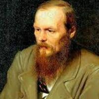
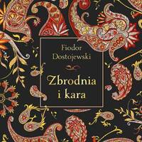
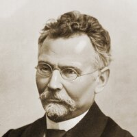
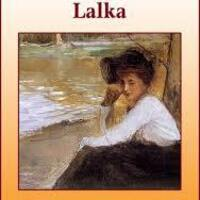

Pozytywizm (1864–1890)
Barok to epoka pełna kontrastów, emocji i bogatego języka. W literaturze dominowały motywy religijne i refleksja nad życiem.
Autor 1: Fiodor Dostojewski
Fiodor Dostoevsky – rosyjski pisarz i filozof, autor powieści psychologicznych.

Dzieło: „Zbrodnia i kara”
Zbrodnia i kara – powieść o Raskolnikowie, który popełnia morderstwo i zmaga się z poczuciem winy oraz moralnością..

Autor 2: Bolesław Prus
Bolesław Prus – polski pisarz pozytywizmu, publicysta.

Dzieło: „Lalka”
Lalka – powieść o Stanisławie Wokulskim i warszawskim społeczeństwie, pokazująca konflikty między ideałami a rzeczywistością.
